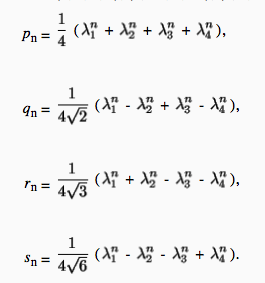

Let $(1 + \sqrt {2} + \sqrt {3})^n = p_n + q_n \sqrt {2} + r_n \ sqrt {3} + s_n \sqrt {6} for n \geq 0$. Find:
a) $ \lim \limits_ {n \to \infty} {\frac {p_n} {q_n}} $;
b) $ \lim \limits_ {n \to \infty} {\frac {p_n} {r_n}} $;
c) $ \lim \limits_ {n \to \infty} {\frac {p_n} {s_n}} $;
We use the method of Problem 11.36. Choosing all possible combinations of signs for the numbers $ \sqrt {2} $ and $ \sqrt {3} $, we obtain the following equalities
Adding these equalities to the coefficients $(1, 1, 1, 1), (1, -1, 1, -1), (1, 1, -1, -1), (1, -1, -1, 1)$, we find

Hence $ \lim \limits_ {n \to \infty} {\frac {p_n} {q_n}} = \sqrt{2}; \lim \limits_ {n \to \infty} {\frac {p_n} {r_n}} = \sqrt{3}; \lim \limits_ {n \to \infty} {\frac {p_n} {s_n}} = \sqrt{6} $.
See the solution above.